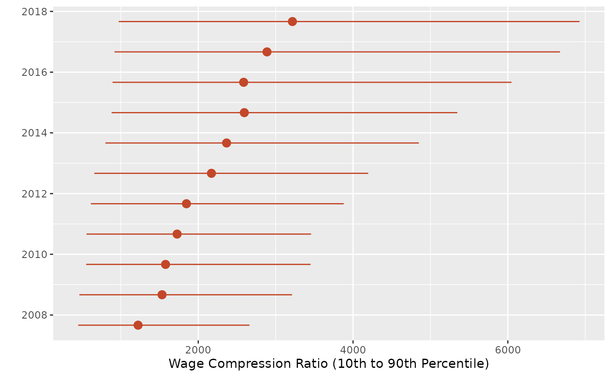

govhr
govhr.RmdIntroduction to govhr
Across the world, public sectors employ over 400 million workers (World Bank 2026). The wage bill of this public sector workforce represents around 40 percent of government expenditure. Helping governments better manage their large and complex workforce, while ensuring fiscal sustainability of their wage bill, is a priority for the World Bank’s Governance Global Practice.
Why govhr?
We believe that better management of human resources should be evidence-based. This means that governments need to have access to high-quality data on their workforce and wagebill, and the tools to analyze them in a systematic way. So far, this journey from raw data to analytics has been an odyssey.
On the data engineering side, human resources (HR) data are complex and large. In addition, governments collect data in their own unique conventions, defying a common data standard. The lack of a common set of rulers to measure the workforce and wage bill makes it difficult to generate analytics from data.
On the analytics side, governments have specific business problems and policy questions that defy a one-size-fits-all approach. One government might be trying to reform its pensions program. Another, ensuring that its workforce is adequately staffed. Each one of these business cases requires a different type of analysis.
The govhr package offers solutions to these challenges.
It provides a set of open-source tools for harmonizing and analyzing HR
data, enabling evidence-based human resource management.
govhr: an overview
govhr has two components: a backend and a frontend. The
backend handles the data engineering or, as we prefer to call it, the
harmonization. The frontend handles analytics, including functions that
compute indicators and visualizes them in plots.

Harmonization
The harmonization backend takes raw, country-specific HR data and re-expresses it using a common data dictionary, so that personnel and contract records become comparable across countries and over time. Typical harmonization tasks include checking whether raw data sources share a consistent schema, applying a standard treatment pipeline to remove duplicates and correct implausible values, and assessing the coverage (completeness) of the resulting harmonized dataset.
# check whether column names are consistent across raw data sources
df1 <- data.frame(personnel_id = 1, ref_date = "2020-01-01", age = 34)
df2 <- data.frame(personnel_id = 2, ref_date = "2020-01-01", gender = "F")
find_inconsistent_colnames(list(df1, df2))
#> # A tibble: 2 × 1
#> colnames
#> <chr>
#> 1 age
#> 2 gendergovhr provides a standard approach to treating data,
formalized in the clean_hr_data. While the standard
approach might not be best suited for your use case, it can serve as a
starting point to formalize your own treatment plan.
# apply the standard treatment pipeline to raw personnel data
personnel_clean <- clean_hr_data(
bra_hrmis_personnel,
data_type = "personnel",
verbose = TRUE
)
#> Starting HR data cleaning pipeline...
#> - Removed 0 duplicate records
#> - Fixed invalid dates (set out-of-bounds to NA)
#> - Handled age issues (flagged underage and over-retirement)
#> Cleaning complete. 15681 records retained (0 removed).Once the data is treated, you might want to assess the coverage of
the data. A set of functions, such as compute_coverage,
allow you to quickly check this aspect of quality of the data.
# assess coverage (share of non-missing values) by employment status
compute_coverage(
personnel_clean,
group = "employment_status"
)
#> # A tibble: 24 × 3
#> employment_status variable coverage
#> <chr> <chr> <dbl>
#> 1 active personnel_id 100
#> 2 pensioner personnel_id 100
#> 3 active ref_date 100
#> 4 pensioner ref_date 100
#> 5 active birth_date 100
#> 6 pensioner birth_date 99.3
#> 7 active age 100
#> 8 pensioner age 100
#> 9 active gender 100
#> 10 pensioner gender 100
#> # ℹ 14 more rowsAnalytics
Once data are harmonized, the analytics frontend turns personnel and contract records into indicators that governments can use to answer specific policy questions: How compressed is the wage structure? Is the workforce growing or shrinking? How is headcount distributed across groups?
govhr provides functions to compute these indicators,
along with companion plotting functions to visualize them.
For example, a government might be curious about wage equity. In particular, whether or not its compression ratio, meaning the ratio between the 90th and 10th percentile of wages, has changed over time. The snippet above concisely analyzes the evolution of the compression ratio, over time.
# wage compression: ratio between the 90th and 10th percentile of gross salary,
# tracked over time
compression_ratio <- compute_compression_ratio(
bra_hrmis_contract,
measure_col = "gross_salary_lcu"
)
plot_compression_ratio(compression_ratio)
Another government want to know whether there was an increase in the
number of personnel with higher education. The
compute_growth function quickly computes that growth rate,
by group.
# growth in headcount from the first to the last reference date, by service type
compute_growth(
bra_hrmis_personnel,
group = "educat7"
)
#> # A tibble: 7 × 2
#> educat7 growth_rate
#> <chr> <dbl>
#> 1 Secondary complete 61.6
#> 2 Higher than secondary but not university 27.7
#> 3 Secondary incomplete 17.5
#> 4 Primary complete 11.3
#> 5 Primary incomplete -10
#> 6 University incomplete or complete 44.2
#> 7 No education 0